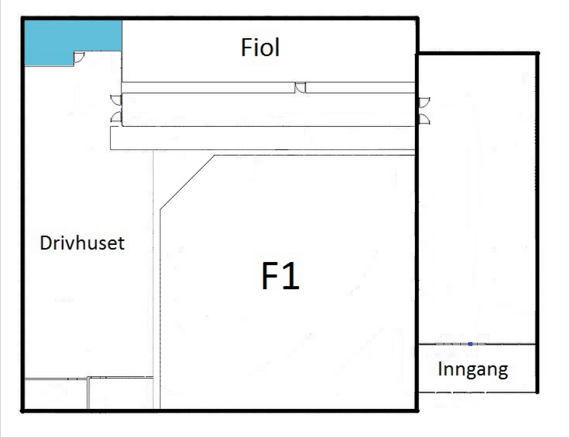

Hackerspace NTNU
Hackerspace NTNU er et pilotprosjekt for å fremme interessen for ny teknologi. Målet er å alltid ha det kuleste og nyeste. Vi har droner, 3D-printer, leap motion, robot-kit og Oculus Rift for å nevne noe. Vi ønsker å være et lavterskeltilbud og stiller derfor også opp og hjelper etter beste evne med utvikling av ny teknologi. Det holdes regelmessig kurs for både nybegynnere og viderekomne for å supplementere dette. Nybegynnerkurs i Arduino og 3D-printing har vært svært populære tidligere, og noe vi tenker å holde igjen. Om du er en førsteklassing som trenger hjelp med ditt første Arduino-prosjekt eller er en fjerdeklassing som ønsker å lage en 3D-modell av Trondheim, kan vi stille med både utstyr og kompetanse. Dersom vi ikke kan svare på spørsmål, vil vi etter beste evne finne noen som kan hjelpe. Vi har fast åpningstid hver dag fra klokken 12 til 18, og er ellers ofte åpen andre dager såfremt en av oss med tilgang til rommet er på NTNU og har tid til å holde åpent. Kom gjerne innom for å se hva vi driver med!
